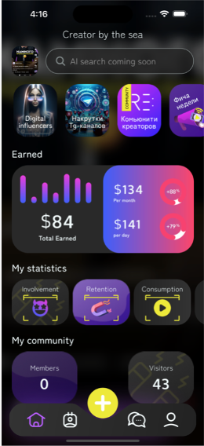
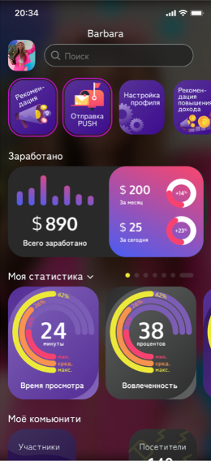
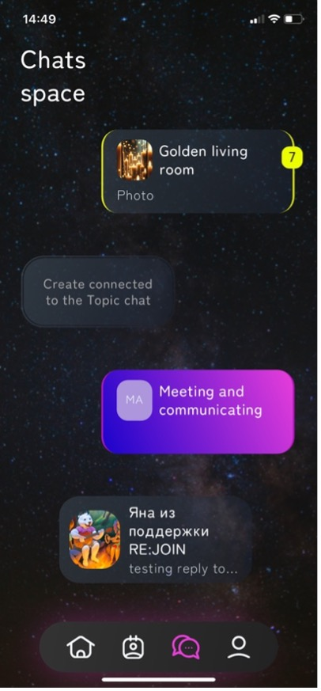
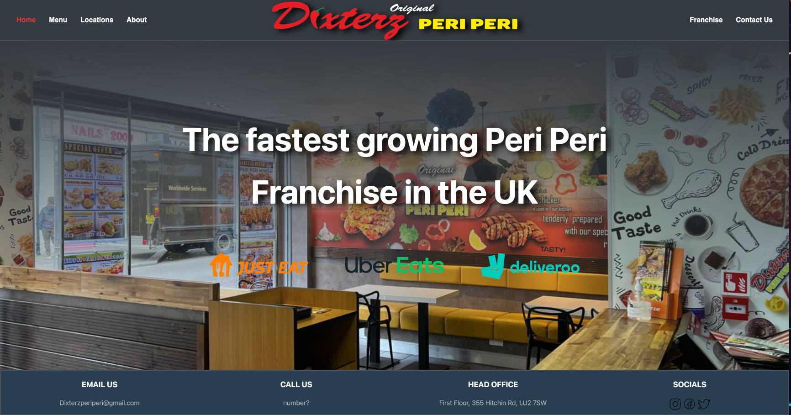
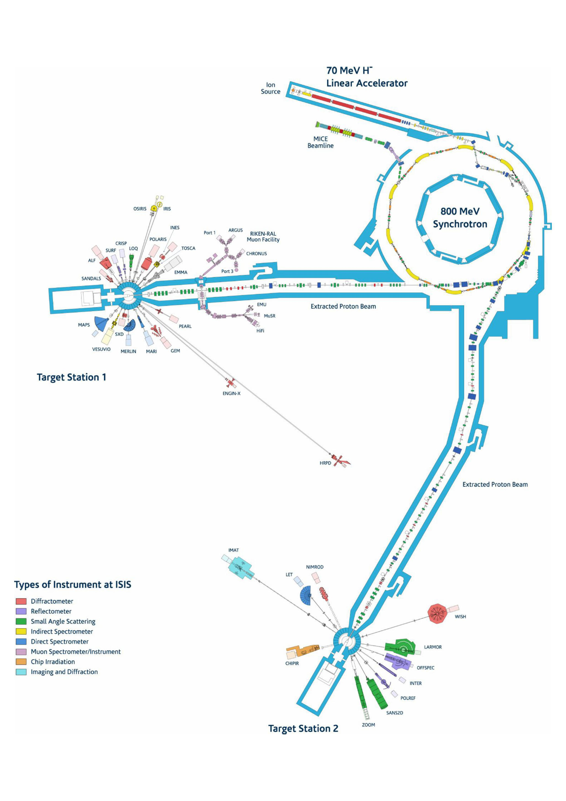
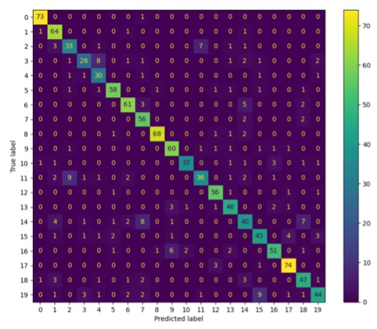
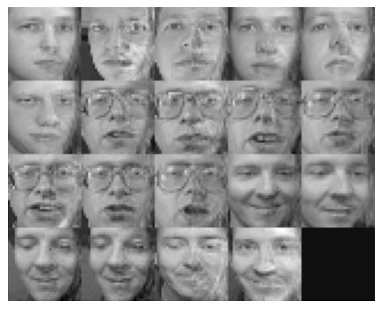
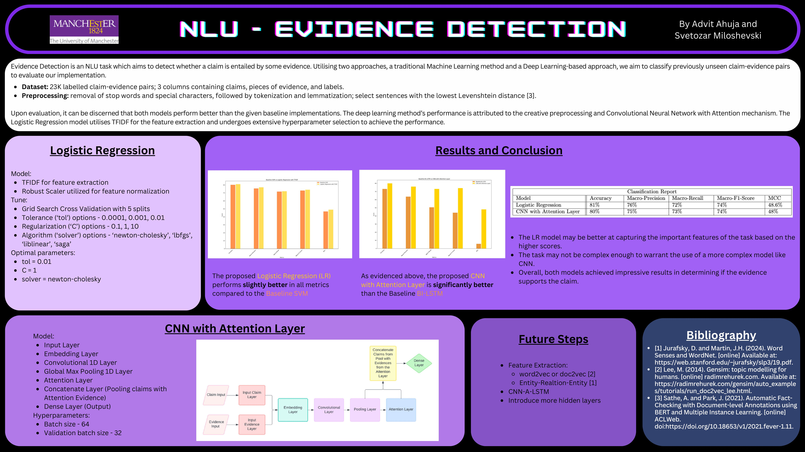
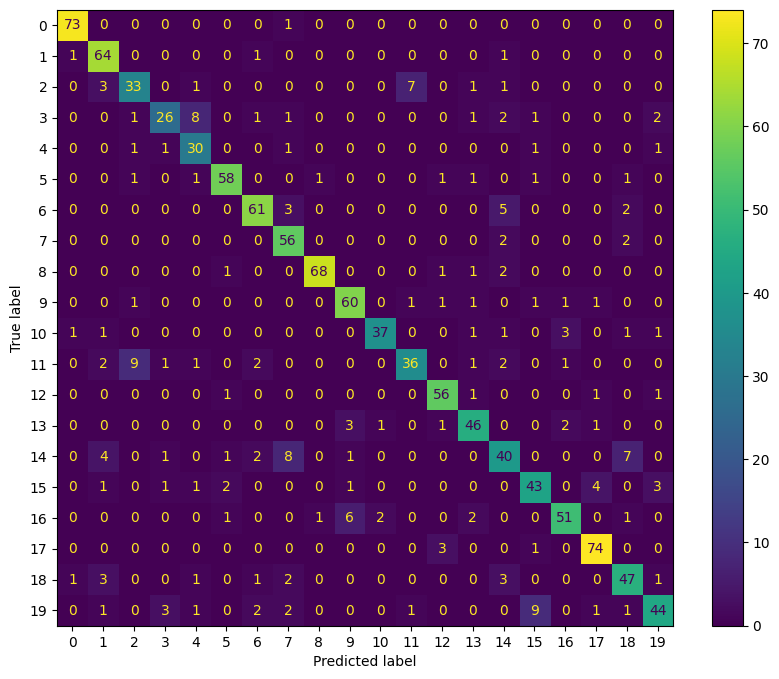

AI Software Engineer building production AI agents and multi-tenant SaaS platforms 0-to-1. At ServiceMob, when the CTO left during early production, took ownership of the company's flagship product as the sole engineer — designing the system end-to-end, from backend schema and per-tenant isolation to client-facing dashboards, with a production AI agent built on custom MCP tooling. The MVP shipped two weeks ahead of schedule, pilots converted into retained paying clients, and the platform scaled from 200 to 1,000+ users.
Now leading a two-engineer team, with a track record of engineering decisions backed by data: a CI-gated LLM evaluation harness that blocks deploys on regression and drove a model-tier decision cutting inference costs by 93%, and an agent-loop re-architecture that brought time-to-first-token from ~20 seconds to ~1 second. That rigor comes from research roots — a dissertation in partnership with UKRI using ML to predict particle-accelerator failures at the ISIS Neutron and Muon Source — and it holds up under pressure: placed 2nd of 1,100+ at Build YC's Next Unicorn, demoing a 0-to-1 build to a Y Combinator panel.
The University of Manchester
BSc Computer Science 2:1 with Honors
Led 0-to-1 development of a multi-tenant SaaS platform with a production AI agent — shipped MVP 2 weeks ahead of schedule, scaled to 1,000+ users.
Revamped the mobile app, engineered real-time chat, and improved reusability by 30%.



Developed a comprehensive, responsive website for a local restaurant chain.


Tuned five ML algorithms to predict ion-source failures in the ISIS particle accelerator, catching half of all failures ~2 hours ahead of the fault. Presented findings to UKRI and influenced further investment.

Modeled and optimized a CNN to classify images from CIFAR-100. Fine tuned 4 parameters leading to a 14% accuracy increase from the baseline.
Developed a computer vision pipeline to detect the horizon in images using OpenCV with C++.

Implemented classical ML from scratch in NumPy: 40-way face recognition at 88.5% leave-one-out accuracy, and face completion — predicting the right half of a face from its left.

Classified 5,927 unseen claim-evidence pairs using Logistic Regression and CNN with an Attention Layer. Outperformed baselines by 5-8% in accuracy and precision.
Interested in learning more?
Predicting ion-source failures at the ISIS Neutron and Muon Source
The ISIS Neutron and Muon Source is a world-leading scientific facility that uses particle accelerators to probe materials at the atomic level, powering breakthroughs from medicine to energy. Its subsystems must run continuously for weeks at a time, so unexpected failures mean costly downtime and interrupted science. My final-year dissertation at the University of Manchester — a joint research project with UKRI as industrial partner — asked whether ion-source failures could be predicted from the telemetry the facility already had, before they occur.
We reconciled irregular, unaligned sensor archives onto a common one-minute time base, joined the operations downtime log to build failure labels, and ran exploratory analysis — KDEs, correlation heat maps, hierarchical clustering and PCA — to cut a large channel set down to ~19 informative ones. Five models (Logistic Regression, Decision Trees, Random Forest, AdaBoost and XGBoost) were tuned under leakage-aware time-series cross-validation and swept across 26 label horizons; with ~26 failures in ~142,000 minutes of machine time, we scored on MCC rather than accuracy.
The best configuration caught half of all ion-source failures in a held-out month of operation, roughly two hours ahead of the fault, at just 0.17% false-alarm duty — with no new sensors or hardware changes. The findings were presented to UKRI and influenced their decision to invest further in the work.
Systematic CNN hyperparameter study on CIFAR-100
CIFAR-100 is a hard target: 60,000 tiny 32×32 images spread across 100 classes. Starting from a course-provided baseline CNN, I ran four systematic one-variable-at-a-time hyperparameter sweeps — dropout rate, pooling size, kernel size and learning rate — on a Conv→BatchNorm→MaxPool architecture trained with Adam, 20 epochs per run.
The sweeps converged on pool (2,2), kernel (3,3), learning rate 0.001 and dropout 0.4, reaching 54.2% test accuracy — a 14% improvement over the baseline. Confusion-matrix analysis showed the model handles some classes far better than others, with visually similar classes (like car vs. van) driving most of the confusion.

Classical CV pipeline — no deep learning
Built an end-to-end classical computer-vision pipeline in C++/OpenCV that detects the horizon line in an arbitrary image: grayscale conversion and thresholding, Canny edge detection, then probabilistic Hough line extraction filtered by angle (near-horizontal only) and segment length.
The surviving line segments feed a 2nd-degree polynomial fit written entirely from scratch — building the normal-equations matrix and solving it with hand-rolled Gaussian elimination and back-substitution, no library solver — which is then drawn as a translucent overlay on the original image. A full parameter study (Canny aperture, Hough resolution, line length and gap thresholds) picked settings that generalised across all test images rather than overfitting to one.
Traditional ML vs. deep learning on 23K claim–evidence pairs
Given 23,000 labelled claim–evidence pairs, the task was to decide whether each piece of evidence supports its claim — comparing a traditional ML approach against a deep-learning one on a shared preprocessing pipeline (stop-word removal, lemmatisation, and narrowing each evidence passage to the sentence with the lowest Levenshtein distance to the claim).
A TF-IDF + Logistic Regression pipeline tuned with 5-fold GridSearchCV went head-to-head with a Keras CNN using an Attention layer. Both classified ~6,000 unseen pairs at 80–81% accuracy, beating the course baselines by 5–8% — and the 60 KB logistic regression matched the 192 MB deep model, which we called out in the poster as evidence the task didn't justify a heavier architecture. Joint project with Svetozar Miloshevski.
Classical ML implemented from first principles in NumPy
Working with a small face dataset (40 subjects, 5 images each), I implemented every model from scratch in NumPy — no library classifiers. L2-regularised least squares in closed form powered 40-way face recognition, with leave-one-out cross-validation selecting the regulariser for 88.5% accuracy.
The highlight is face completion: treating left half-faces as inputs and right halves as targets, the same regression model predicts the missing half of an unseen face — the image below shows real left halves joined to predicted right halves. I also trained the model with full-batch gradient descent, and derived the hinge-loss sub-gradient by hand to build an SVM-style classifier reaching 94.2% on a binary task — then showed least squares actually converges faster when classes are already linearly separable.